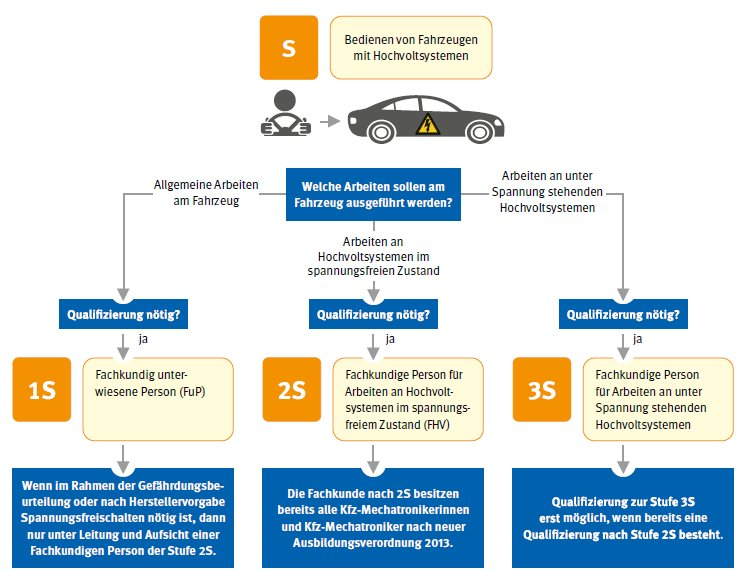
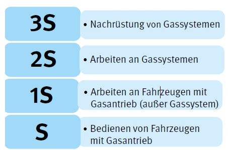

Abschnitt C
10 Notwendige Qualifikationen
10.1 Qualifizierung für Arbeiten an Fahrzeugen mit Hochvoltsystemen
10.1.1 Elektrotechnische Arbeiten an Hochvoltsystemen und deren Komponenten dürfen nur von fachkundigen Personen für Arbeiten an Hochvoltsystemen oder von fachkundig unterwiesenen Personen unter Aufsicht und Leitung einer fachkundigen Person für Arbeiten an Hochvoltsystemen durchgeführt werden.
Elektrotechnische Arbeiten an Hochvoltsystemen und deren Komponenten (> 30 V AC/> 60 V DC) im Sinne der DGUV Information 209-093 "Qualifizierung für Arbeiten an Fahrzeugen mit Hochvoltsystemen" sind alle Formen elektrotechnischer und nichtelektrotechnischer Tätigkeiten an Fahrzeugen oder HV-Komponenten, bei denen die Möglichkeit einer elektrischen Gefährdung besteht.
10.1.2 Die Anforderungen an die Qualifizierung richten sich nach den durchzuführenden Tätigkeiten am Fahrzeug. Die einzelnen Qualifizierungsstufen sind in der DGUV Information 209-093 "Qualifizierung für Arbeiten an Fahrzeugen mit Hochvoltsystemen" beschrieben.
Der erforderliche Qualifizierungsgrad für Arbeiten an Serienfahrzeugen kann anhand des folgenden Schemas bestimmt werden.

Abb. 1: Bestimmung des erforderlichen Qualifizierungsgrads für Arbeiten
an Serienfahrzeugen mit Hochvoltsystemen
10.2 Qualifizierung für Arbeiten an Fahrzeugen mit Gasantriebssystemen
10.2.1 Arbeiten an Gassystemen zum Antrieb von Fahrzeugen dürfen nur von fachkundigen Personen oder von fachkundig unterwiesenen Personen unter Aufsicht und Leitung einer fachkundigen Person
durchgeführt werden.
Arbeiten an Fahrzeugen mit Gasantriebssystemen sind von fachkundig unterwiesenen Personen durchzuführen.
Mit dem Einsatz von Gasen als Antriebskraftstoff ergeben sich spezielle Gefährdungen. Sie sind bei Auf- oder Einbau, Wartung, Instandsetzung, Prüfung und auch beim Betreiben von Gassystemen in Fahrzeugen relevant. Daraus ergibt sich die Verantwortung für Unternehmerinnen und Unternehmer, Beschäftigte so zu qualifizieren, dass sie in der Lage sind, Arbeiten an Fahrzeugen mit Gasantriebssystemen zu beurteilen und sicher auszuführen.
Die Anforderungen gelten für alle Fahrzeuge mit Gasantrieb. Die derzeit eingesetzten Antriebsgase sind in Punkt 7.4.4 dargestellt.
10.2.2 Die Anforderungen an die Qualifizierung richtet sich nach den durchzuführenden Tätigkeiten am Fahrzeug.
Die einzelnen Qualifizierungsstufen sind in der Informationsschrift Fachbereich AKTUELL FBHM-099 "Gasantriebssysteme in Fahrzeugen – Qualifizierung für Arbeiten an Fahrzeugen mit Gasantrieb" beschrieben. Die in Frage kommenden Qualifizierungsstufen für Arbeiten in der Fahrzeuginstandhaltung sind im folgenden Schema dargestellt:

Abb. 2: Qualifizierungsstufen für Arbeiten an Serienfahrzeugen mit Gasantrieb
10.3 Pyrotechnik
Tätigkeiten mit pyrotechnischen Gegenständen in Kraftfahrzeugen dürfen nur von benannten, fachkundigen und geschulten Personen ausgeübt werden, die mindestens über eine eingeschränkte Fachkunde P1 verfügen. Davon ausgenommen ist der Umgang mit pyrotechnischen Gegenständen in geschlossenen originalen Versandverpackungen (siehe auch Punkt 5.9.4).
Zu Tätigkeiten mit pyrotechnischen Gegenständen in Kraftfahrzeugen zählen Ein- und Ausbau, Aufbewahren oder Lagern, Vernichten, Befördern, Erwerben, Vertreiben sowie Überlassen einschließlich Vermitteln und Entsorgen.
Die eingeschränkte Fachkunde P1 kann zum Beispiel durch Schulungen der Fahrzeughersteller oder der Innungen des KFZ-Handwerks erlangt werden.
Bei der Tätigkeit "Vernichten" berechtigt die eingeschränkte Fachkunde ausschließlich zum Zünden (Auslösen) von pyrotechnischen Gegenständen in Kraftfahrzeugen im eingebauten Zustand.
Das Zünden (Auslösen) von pyrotechnischen Gegenständen im ausgebauten Zustand darf nur von Personen ausgeübt werden, die über einen Befähigungsschein nach § 20 des Sprengstoffgesetzes verfügen und deren Unternehmen eine sprengstoffrechtliche Erlaubnis nach § 7 des Sprengstoffgesetzes besitzt.
10.4 Arbeiten an Klimaanlagen
Für alle Arbeiten an Kraftfahrzeug-Klimaanlagen sind Qualifikationen in Abhängigkeit vom eingesetzten Kältemittel erforderlich.
Erforderliche Qualifizierungen zur Durchführung der Tätigkeiten
mit dem Kältemittel ...
|
Tätigkeiten
|
R134 a
|
R1234yf
|
R744 (CO2)
|
Sämtliche Arbeiten in Verbindung mit der Rückgewinnung von Kältemitteln aus Kraftfahrzeug-Klimaanlagen |
- Erfolgreich abgeschlossene Ausbildung im Kfz-Handwerk
- Ausbildungsbescheinigung/Sachkundenachweis gemäß den Anforderungen der Chemikalien-Klimaschutzverordnung in Verbindung mit der Verordnung (EG) Nr. 307/2008
|
- Erfolgreich abgeschlossene Ausbildung im Kfz-Handwerk
|
| Instandhaltungs- und Wartungsarbeiten an Kraftfahrzeug-Klimaanlagen, deren Kältemittel bereits abgesaugt wurde |
Erfolgreich abgeschlossene Ausbildung im Kfz-Handwerk |
Unabhängig von den Inhalten der oben aufgeführten Tabelle sollten alle Arbeitnehmerinnen und Arbeitnehmer, die Arbeiten an Kraftfahrzeug-Klimaanlagen ausüben, grundsätzlich über eine Ausbildungsbescheinigung/einen Sachkundenachweis gemäß den Anforderungen der Chemikalien-Klimaschutzverordnung in Verbindung mit der Verordnung (EG) Nr. 307/2008 verfügen.
Arbeitnehmerinnen und Arbeitnehmer, die Arbeiten an Kälteanlagen in Fahrzeugen oder Anhängern mit Isolierwänden und Kühlung ausüben, müssen seit dem 1. Juli 2017 über ein Zertifikat gemäß den Anforderungen der Verordnung (EU) 2015/2067 verfügen. Diese Anforderung gilt nicht für Arbeitnehmerinnen und Arbeitnehmer, die über ein vor dem 1. Juli 2017 ausgestelltes Zertifikat nach den Vorgaben der Verordnung (EG) Nr. 303/2008 verfügen.
Für Klimaanlagen in Schienenfahrzeugen gelten ggf. gesonderte Anforderungen.
10.5 Fachkunde
10.5.1 Unternehmerinnen und Unternehmer dürfen Instandhaltungs-, Um- oder Nachrüstarbeiten, die spezielle Fachkenntnisse erfordern, nur hierfür geeigneten Unternehmen übertragen oder
durch von ihnen bestimmte fachlich geeignete Versicherte oder unter deren Leitung ausführen lassen.
Siehe § 56 Abs. 1 DGUV Vorschriften 70 und 71 "Fahrzeuge".
10.5.2 Die erforderliche Fachkunde für Tätigkeiten in der Fahrzeuginstandhaltung ist im Rahmen der Gefährdungsbeurteilung zu ermitteln und sicherzustellen.
Fachkundig ist, wer zur Ausübung einer bestimmten Aufgabe über die erforderlichen Fachkenntnisse verfügt. Die Anforderungen an die Fachkunde sind abhängig von der jeweiligen Art der Aufgabe. Zu den Anforderungen zählen eine entsprechende Berufsausbildung, Berufserfahrung oder eine zeitnah ausgeübte entsprechende berufliche Tätigkeit. Die Fachkenntnisse sind durch Teilnahme an Schulungen oder Unterweisungen auf aktuellem Stand zu halten.
Siehe § 2 Absatz 5 BetrSichV und § 2 Absatz 16 GefStoffV.
10.5.3 Für bestimmte Tätigkeiten in der Fahrzeuginstandhaltung ist eine besondere Fachkunde erforderlich.
Tätigkeiten, für die eine besondere Fachkunde vorausgesetzt wird, sind unter anderem in folgenden Publikationen beschrieben:
- DGUV Information 209-093 "Qualifizierung für Arbeiten an Fahrzeugen mit Hochvoltsystemen"
- Fachbereich AKTUELL FBHM-099 des Fachbereichs Holz und Metall "Gasantriebssysteme – Qualifizierung für Arbeiten an Fahrzeugen mit Gasantrieb"
- § 32 1. Sprengstoffverordnung, Tätigkeiten an pyrotechnischen Erzeugnissen (Airbag, Gurtstraffer).